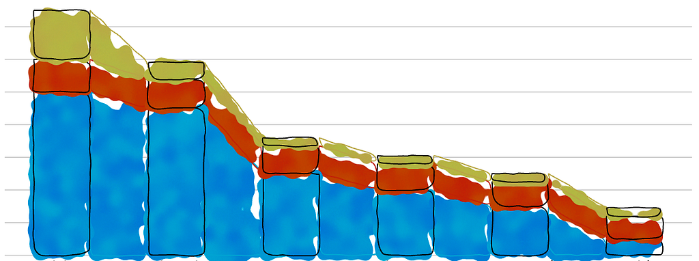

I released Semiotic to help folks using React deploy better data visualization. But since announcing its release I’ve heard from a few people who want to try to develop with Semiotic but have never gotten into React. So I thought I’d give a quick explanation of how to get started, with links to articles that get you situated with React.

Understanding React
If you’re getting into React you need to understand the basics of it and prepare yourself for the shock and disgust then delight and love of HTM+JavaScript known as JSX. There are so many articles and books and answered tech questions all over that it would be hard for me to recommend one. I found Samer Buna’s “All the fundamental React.js concepts, jammed into this single Medium article” to be a pretty decent summary of how React works. If you’re interested in also understanding D3v4 better, my 2nd edition of D3.js in Action has a chapter on React that explains its core concepts from the perspective of a data visualization developer familiar with D3.
Setting up Your React App
For those of you coming from traditional web development with static source files included in your HTML doc, the biggest hurdle is the modern JavaScript development environment. If you want to see how to get a React environment up and running with the least effort possible, I recommend react-create-app. I use in my article on integrating D3 and React which you could also follow to get your first React app started.
Intalling Semiotic
Once you have a React app set up, you can install Semiotic with npm i -S semiotic which installs semiotic in your local application and saves a reference to Semiotic in your package.json. Now that you have Semiotic installed, you can import any of its components and use them almost as you see them in the interactive examples in the documentation.
Using Semiotic in Your App
I say “almost” because the examples have code that look like this:
const answers = [
{"question":"Question 1", "type":"disagree", "color":"#d38779", "value":-294, "percent":-0.09},
{"question":"Question 1", "type":"stronglydisagree", "color":"#b3331d", "value":-24, "percent":-0.007},
{"question":"Question 1", "type":"agree", "color":"#00a2ce", "value":1927, "percent":0.59}
]
import { ORFrame } from 'semiotic'
export default <ORFrame
size={[ 700,500 ]}
data={answers}
type="bar"
projection="horizontal"
oAccessor={"question"}
rAccessor={"percent"}
style={d => ({ fill: d.color })}
margin={{ top: 30, bottom: 0, left: 80, right: 50 }}
oPadding={20}
oLabel={true}
axis={{ orient: "top", tickValues: [ -0.3, -0.15, 0, 0.2, 0.4, 0.6, 0.8, 1]}}
/>
And that’s not really React ready. Rather than just directly exporting or using <ORFrame> like you see above, you need to drop it somewhere in the render function of the component where you want to have data visualization. You also need some data to work with (the full dataset for this example is here). So the real code would look more like this:
import React from "react";
import { ORFrame } from 'semiotic'
const answers = [
{"question":"Question 1", "type":"disagree", "color":"#d38779", "value":-294, "percent":-0.09},
{"question":"Question 2", "type":"stronglydisagree", "color":"#b3331d", "value":-24, "percent":-0.007},
{"question":"Question 3", "type":"agree", "color":"#00a2ce", "value":1927, "percent":0.59}
]
export default class DivergingStackedBar extends React.Component {render() {return (<div>
<h1>A diverging Bar Chart With Negative Values</h1>
<ORFrame
size={[ 700,500 ]}
data={answers}
type="bar"
projection="horizontal"
oAccessor={"question"}
rAccessor={"percent"}
style={d => ({ fill: d.color })}
margin={{ top: 30, bottom: 0, left: 80, right: 50 }}
oPadding={20}
oLabel={true}
axis={{ orient: "top", tickValues: [ -0.3, -0.15, 0, 0.2, 0.4, 0.6, 0.8, 1]}}
/>
</div>)
} // End of the render function
} // End of the component
You may wonder why I put the data array outside of the render function. That’s because everything declared in the render function is created brand new every time render fires and so React can’t tell that the data is actually the same data when it’s doing its virtual DOM comparison. It’s the same with functions you create in render(). So it’s generally a good policy (and one that I myself don’t follow like I should) to create any static data and functions outside of render. You’ll also notice that I’ve wrapped ORFrame in a <div> so that I could put an <h1> above it. That’s because the render function can only return a single DOM element.
At this point you should be seeing the same thing you see on the interactive documentation and if you don’t let me know with a Github issue.